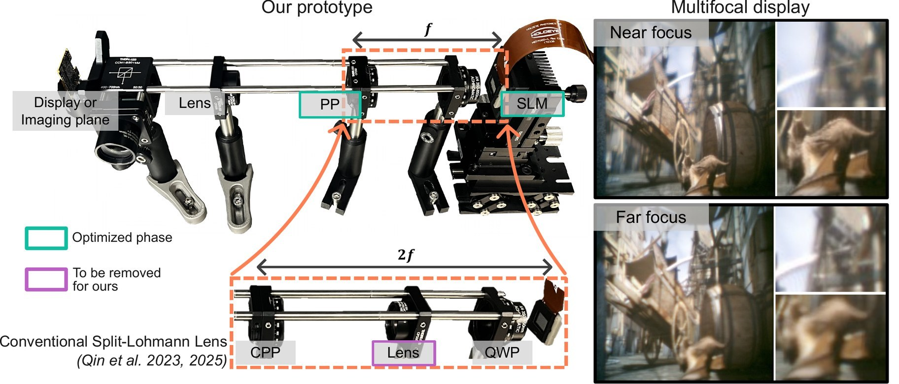
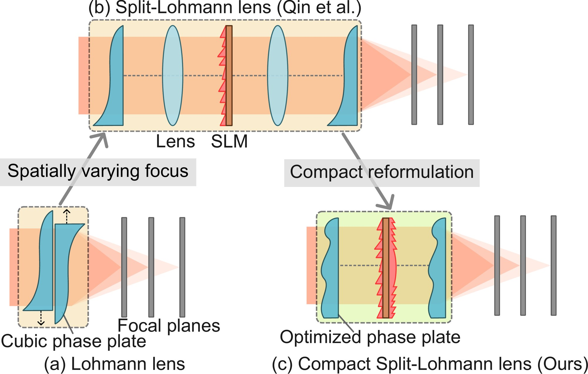
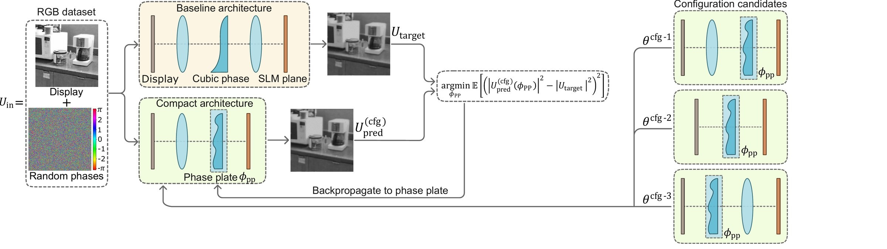
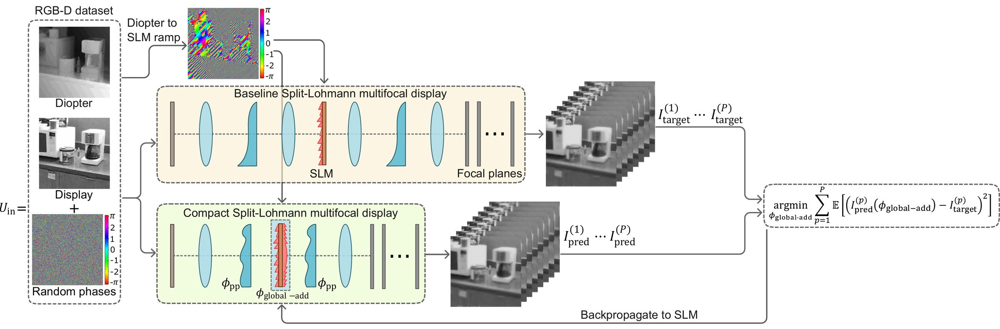
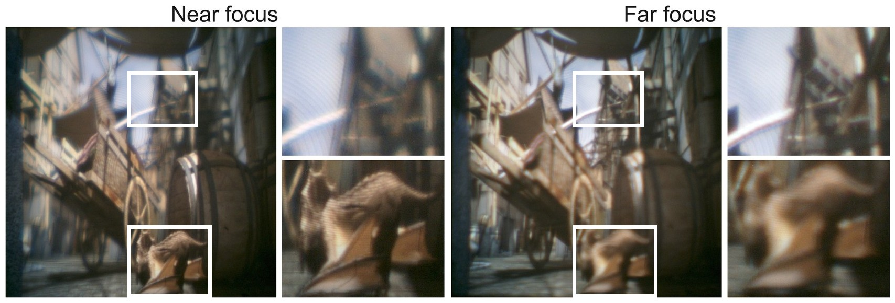
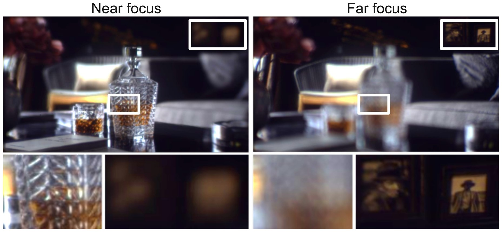
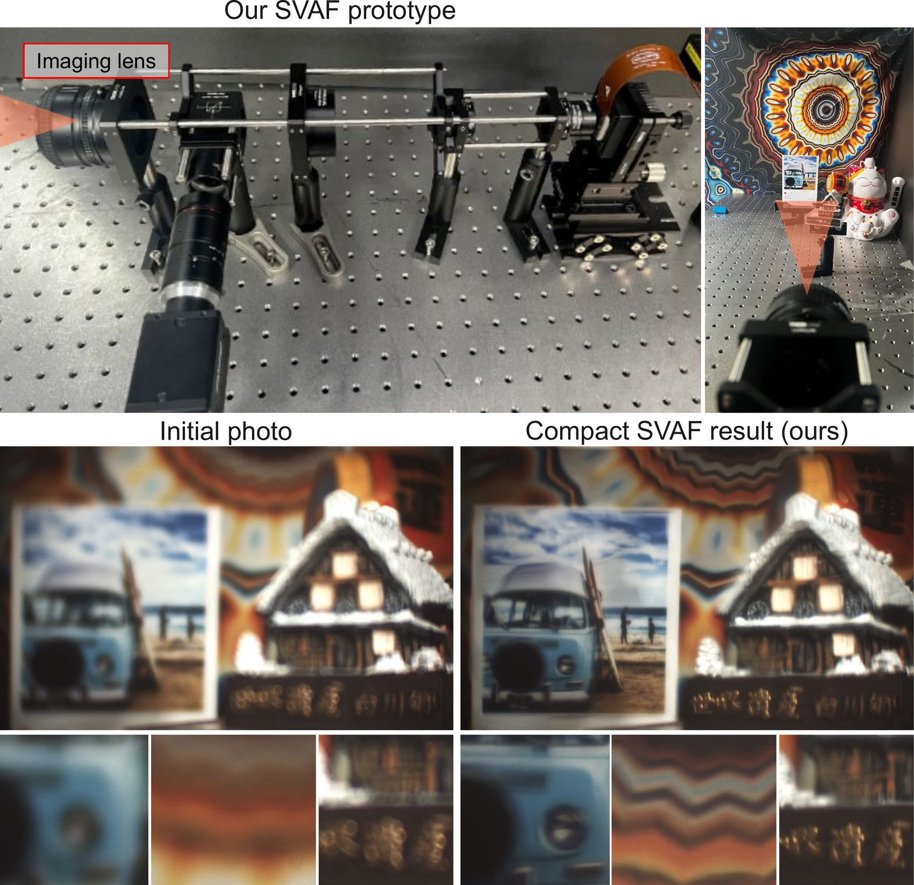

The Split-Lohmann lens gives every pixel of a near-eye display its own focus, but it needs a 4f relay. We replace the relay lens and cubic phase plate with one optimized phase plate, let the SLM supply a correction phase, and shorten the display path from 4f to 3f with the same spatially varying focus.

Abstract
Rendering accurate virtual depths in accommodation-supporting near-eye displays relies on generating wavefronts with spatially varying curvature. The Split-Lohmann lens uses a cubic-phase plate, a relay lens, and a spatial light modulator (SLM), offering an effective method for generating these wavefronts. However, its reliance on complex relay optics leads to a bulky form factor, limiting its practicality.
Here, we present a compact reformulation of the Split-Lohmann lens. Our approach replaces the bulky relay with a single phase plate and a subsequently optimized SLM phase. This reduces the multifocal-display optical path by 25%, achieving a peak signal-to-noise ratio of 30.74 dB against the baseline. We further show that this compact architecture readily extends to recent spatially varying autofocus systems, delivering precise multi-depth focusing in a reduced form factor. We hope our proposed method improves the practicality of the Split-Lohmann lens.
Method
The Split-Lohmann lens, and the part we remove
A Lohmann lens turns the shift between two cubic phase plates into focal power. The Split-Lohmann lens makes that shift local with a phase ramp on an SLM, so every region of the display gets its own focus in a single frame, but it needs a 4f relay to do so.
We keep the first lens and fold the rest of the relay into one phase plate and an SLM correction.

Dual-domain phase optimization
Stage 1: Phase plate
For three candidate layouts, we optimize the phase plate so that the intensity at the SLM plane matches the 4f baseline over 5,286 RGB-D scenes. Only the plate at the Fourier plane of the lens keeps the cubic-phase structure, and it converges to a lens of focal length f plus a cubic phase.

Stage 2: SLM correction phase
With the plate fixed, we optimize one global SLM correction, added to the usual depth-dependent ramp, so that the focal stack matches the baseline on 8 planes across 4 D. It converges to a lens of focal length f/2 and is reused for every scene.

Results
Prototype 1: fabricated thin phase plate
With the SLM correction phase, the foreground is sharp at near focus and the street behind it at far focus. Without the correction, focus lands in the wrong place; switch it off for the street scene in the viewer above.


Prototype 2: refractive optics
Here the optimized phase terms are realized with a cubic phase plate and refractive lenses. The decanter is sharp at near focus and the portraits behind it at far focus, on an optical path 25% shorter than the 4f relay.
Spatially varying autofocus
Placing an imaging lens where the display was turns the same compact module into a camera. A per-superpixel contrast search sets the local SLM ramp, bringing details at different depths into focus in one shot.

BibTeX
@inproceedings{jeon2026compact,
title = {Compact Split-Lohmann Lens via Dual-domain Phase Optimization},
author = {Jeon, Yujin and Lee, Byounghyo and Yeom, Jiwoon and
Kwak, Gitae and Hong, Jisoo and Baek, Seung-Hwan},
booktitle = {SIGGRAPH Asia 2026 Conference Papers},
series = {SA Conference Papers '26},
year = {2026},
location = {Kuala Lumpur, Malaysia},
publisher = {ACM},
numpages = {11},
doi = {10.1145/3829340.3842337}
}